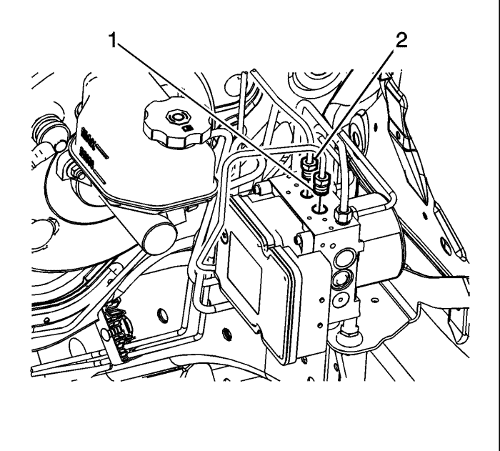
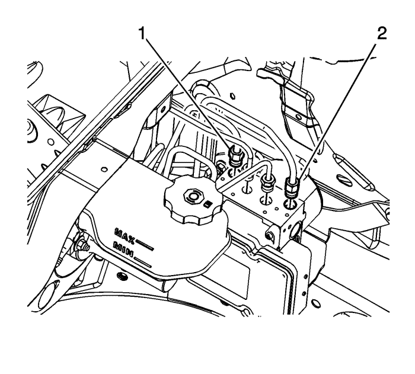
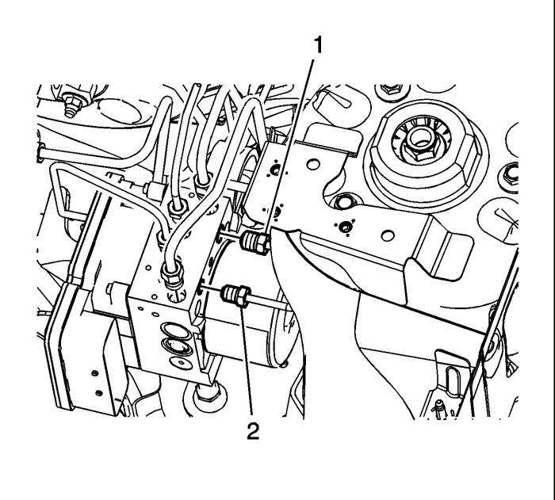

Sustitución de la válvula moduladora de presión de los frenos
Procedimiento de desmontaje
Advertencia: Consulte Advertencia de líquido de frenos irritante en la sección Prólogo.
Precaución: Consulte Advertencia sobre los efectos del líquido de frenos sobre la pintura y los componentes eléctricos en la sección Prólogo.
Atención: Conecte o desconecte siempre el conector del mazo de cables desde el EBCM/EBTCM con el interruptor de encendido en la posición OFF (desactivado). El incumplimiento de esta precaución podría ocasionar daños en el EBCM/EBTCM.
- Gire el interruptor de encendido hasta la posición OFF.
- Desmonte el centro eléctrico bajo el capó.
- Sin evacuar el refrigerante ni desmontar los tubos flexibles, desmonte y sitúe a un lado la cámara de compensación del radiador. Consultar Sustitución del vaso de expansión del radiador : Diesel → Motores de gasolina .

- Desemborne el conector eléctrico del módulo de control del freno electrónico (EBCM) levantando las pestañas de fijación.
- Desacople el racor (1) del tubo del freno delantero izquierdo de la válvula moduladora de presión del freno (BPMV).
- Tape el racor de la tubería de freno, y tapone la lumbrera de salida de la BPMV, para prevenir la pérdida de líquido de frenos y la contaminación.
- Desacople el racor del tubo del freno delantero derecho (2) de la BPMV.
- Tape el racor de la tubería de freno, y tapone la lumbrera de salida de la BPMV, para prevenir la pérdida de líquido de frenos y la contaminación.

- Desconecte el racor de la tubería de freno primaria del cilindro maestro (1), de la BPMV.
- Tape el racor de la tubería de freno, y tapone la lumbrera de entrada de la BPMV, para prevenir la pérdida de líquido de frenos y la contaminación.
- Desconecte el racor de la tubería de freno secundaria del cilindro maestro (2), de la BPMV.
- Tape el racor de la tubería de freno, y tapone la lumbrera de entrada de la BPMV, para prevenir la pérdida de líquido de frenos y la contaminación.

- Desacople el racor del tubo del freno trasero izquierdo (1) de la BPMV.
- Tape el racor de la tubería de freno, y tapone la lumbrera de salida de la BPMV, para prevenir la pérdida de líquido de frenos y la contaminación.
- Desacople el racor del tubo del freno trasero derecho (2) de la BPMV.
- Tape el racor de la tubería de freno, y tapone la lumbrera de salida de la BPMV, para prevenir la pérdida de líquido de frenos y la contaminación.

- Extraiga el tornillo (1) de la BPMV.

Nota: No haga palanca en las caperuzas del acumulador situadas en la parte inferior de la BPMV.
- Desmonte con cuidado el conjunto de la BPMV (1) tirando de él hacia arriba en dirección completamente vertical.
- Compruebe que los aislamientos no sufren daños y sustitúyalos si es necesario.
Procedimiento de montaje
- Acople el conjunto de la BPMV (1) al soporte.
Precaución: Consulte Precaución con las fijaciones en la sección Prólogo.
- Monte el tornillo (1) de la BPMV y apriételo a un par de 10 N·m (89 lb. pulg.).
- Acople el racor (1) del tubo del freno trasero izquierdo a la BPMV y apriételo a un par de 21 N·m (16 lb. pie).
- Acople el racor (2) del tubo del freno trasero derecho a la BPMV y apriételo a un par de 21 N·m (16 lb. pie).
- Acople el racor (1) del tubo de freno primario del cilindro maestro a la BPMV y apriételo a un par de 21 N·m (16 lb. pie).
- Acople el racor (2) del tubo de freno secundario del cilindro maestro a la BPMV y apriételo a un par de 21 N·m (16 lb. pie).
- Conecte el racor (1) del tubo del freno delantero izquierdo a la BPMV y apriételo a un par de 21 N·m (16 lb. pie).
- Acople el racor (2) del tubo del freno delantero derecho a la BPMV y apriételo a un par de 21 N·m (16 lb. pie).
- Emborne el conector eléctrico del EBCM.
- Monte el depósito de expansión del radiador. Consultar Sustitución del vaso de expansión del radiador : Diesel → Motores de gasolina .
- Monte el centro eléctrico de la parte inferior del capó
- Purgue el sistema de sistema de frenos hidráulicos. Consultar Purga de aire del sistema de frenos hidráulicos : Manual → Presión .
- Gire el interruptor de encendido a la posición ON.
- Realice las Comprobación del sistema de diagnóstico - Vehículo .
- Después de realizar la comprobación del sistema de diagnóstico, compruebe la suavidad / firmeza del pedal de freno. Si el pedal transmite ahora una sensación "blanda", es posible que haya habido o se haya introducido aire en el circuito primario.
- Si el pedal transmite una sensación "blanda", lleve a cabo el Purga automática del sistema de frenado antibloqueo .
| © Copyright Chevrolet Europe. All rights reserved |